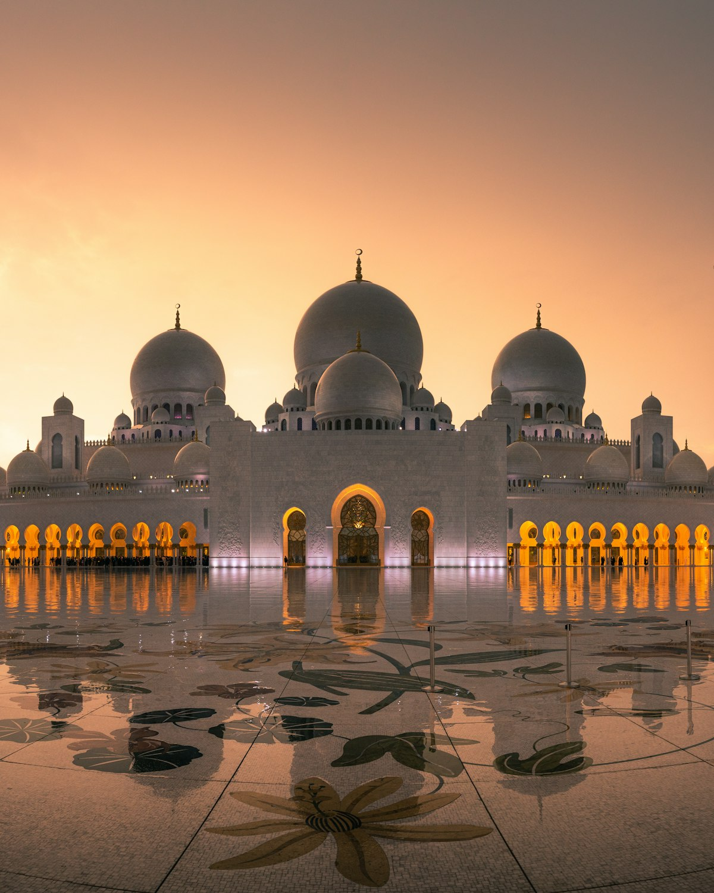
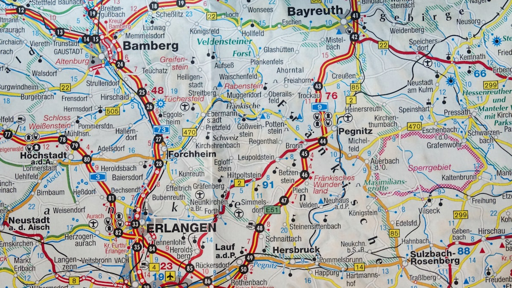

$69 / persona
$69 / persona
Valle Sagrado • Cultural
Tour Valle Sagrado VIP
Explora Pisaq, Ollantaytambo, Chinchero, Moray y las Salineras de Maras en un recorrido exclusivo y eficiente con almuerzo buffet incluido.
Ver más información $49 / persona
$49 / persona
Aventura • Caminata
Tour Montaña 7 Colores y Valle Rojo
Conquista la famosa cumbre de Vinicunca a más de 5,000 msnm con un trekking retador y vistas de ese entorno rodeados de glaciares andinos.
Ver más información
$39 / persona
Aventura • Caminata
Tour Laguna Humantay
Camina al pie del imponente nevado Salkantay y maravíllate con las aguas turquesa cristalinas de la laguna sagrada de la cordillera.
Ver más información $297 / persona
$297 / persona
Machu Picchu • Tradicional
Machu Picchu Full Day
Cumple tu sueño de visitar la legendaria ciudadela Inca de Machu Picchu en un viaje inolvidable en tren turístico con traslados y guiado profesional.
Ver más información
S/. 35 / personaCusco • Cultural • Tradicional
City Tour Cusco
Conoce la rica historia de Cusco, sus templos coloniales e impresionantes restos incas como Coricancha y Sacsayhuamán en un tour imperdible.
Ver más información
S/. 150 / personaAventura • Caminata
Tour a Waqrapukara
Explora la fortaleza sagrada de los cuernos, suspendida entre abismos y cañones profundos. Aventura responsable y trekking de autor sin multitudes.
Ver más información S/. 100 / persona
S/. 100 / persona
Aventura • Caminata
Tour Ausangate 7 Lagunas
Camina rodeado de glaciares andinos y descubre lagunas de intensos colores bajo la imponente presencia del nevado sagrado Ausangate.
Ver más información
S/. 110 / persona
Aventura • Caminata
Laguna Humantay + Buffet
Maravíllate con la joya turquesa a los pies del nevado Humantay. Incluye desayuno y almuerzo buffet completo en Mollepata.
Ver más información